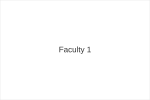
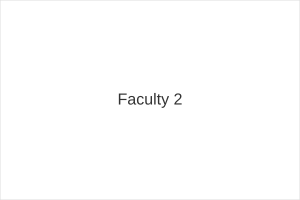
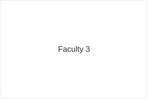
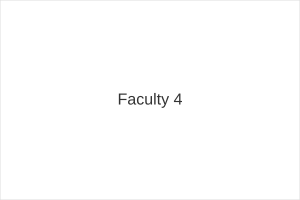

Dr. Maria Lopez
Professor — Software Engineering
The Department of Computing & Informatics (DCI) offers degree programs and learning resources that focus on software development, systems engineering, networking, cybersecurity, and multimedia technologies.
Our mission is to deliver quality education, foster critical thinking, and prepare students for careers in a fast-changing digital world. We emphasize practical experience in well-equipped labs and close collaboration with faculty researchers and industry partners.
Dean, Department of Computing & Informatics
Welcome to DCI. We are committed to academic excellence and to supporting our students' aspirations. Our faculty combine teaching, research, and industry collaboration to give students a comprehensive learning experience.

Professor — Software Engineering

Associate Professor — Computer Networks

Assistant Professor — Cybersecurity

Lecturer — Multimedia & Research